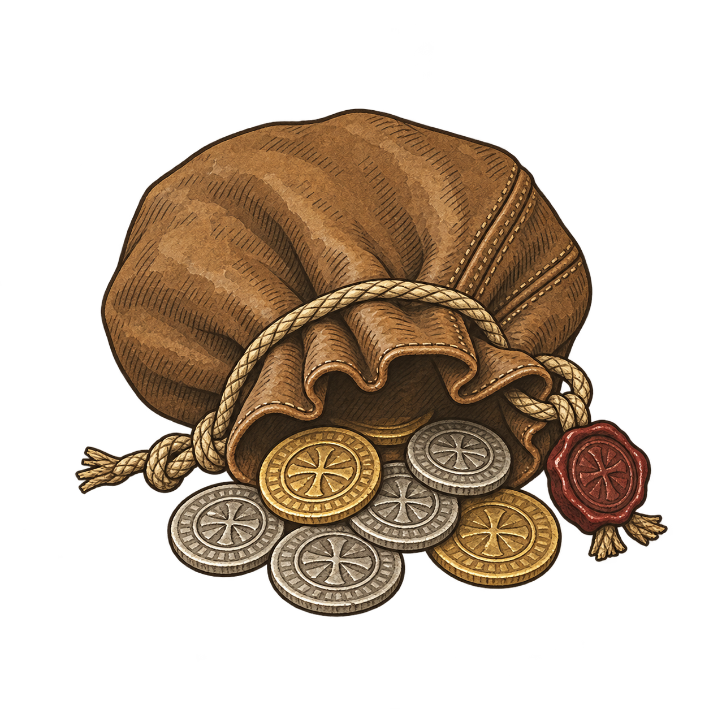
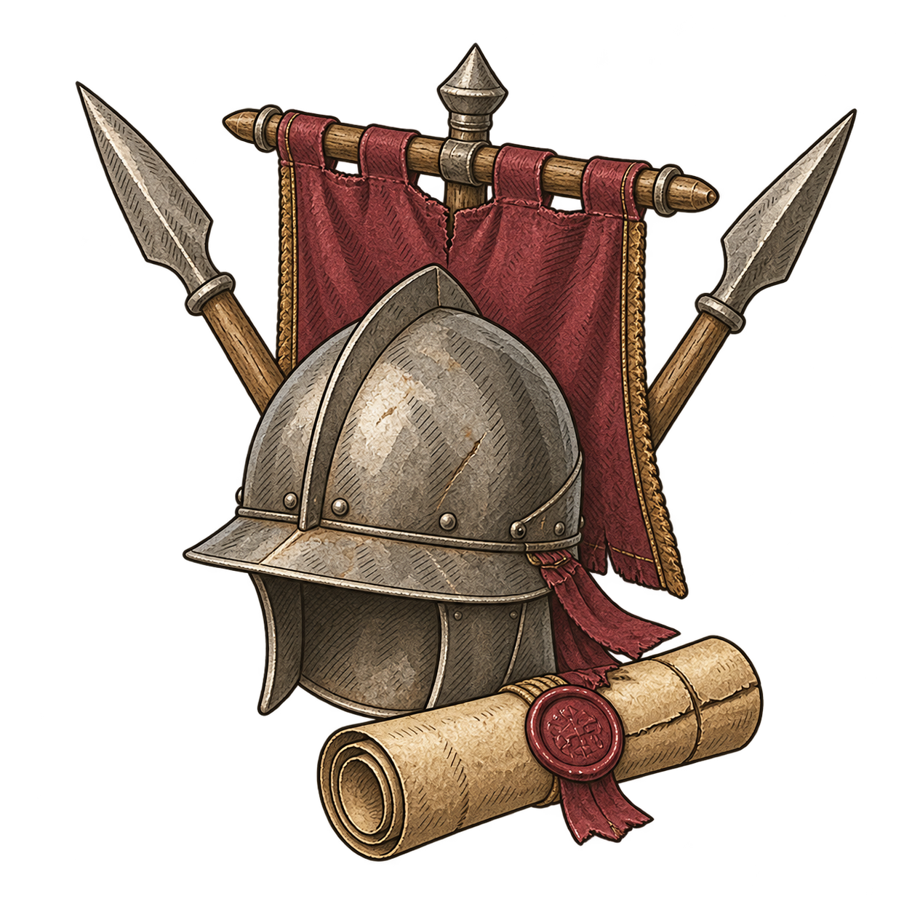

I
Gold pickup
Pouch · coins · wax seal


Tawny leather, antique gold, warm gray silver, and a muted red seal. Ink outlines replace photographic shine.
II
Troop pickup
Helmet · banner · spears · orders


Warm gray iron, weathered burgundy, and parchment orders. The helmet, banner, spears, and scroll remain together.
AT GAME SCALE
Clear on parchment. At home on the map.
48px · 64px · 96px
PARCHMENT PANELS
MAP PICKUPS